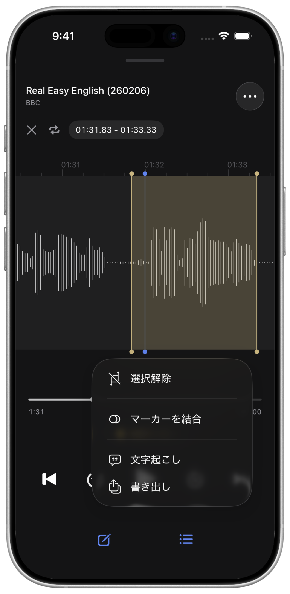
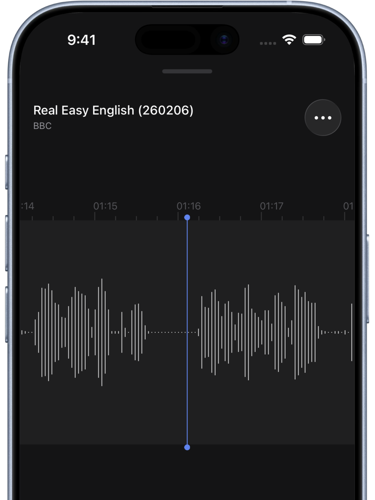
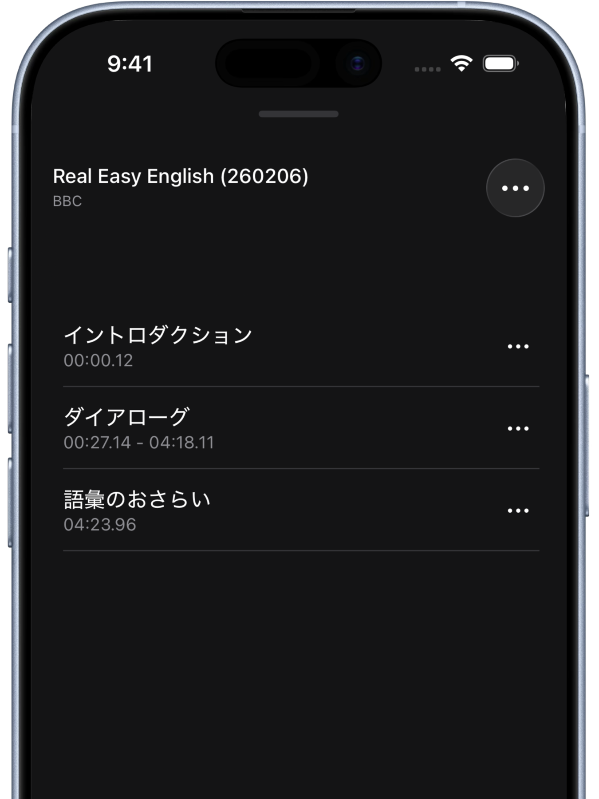
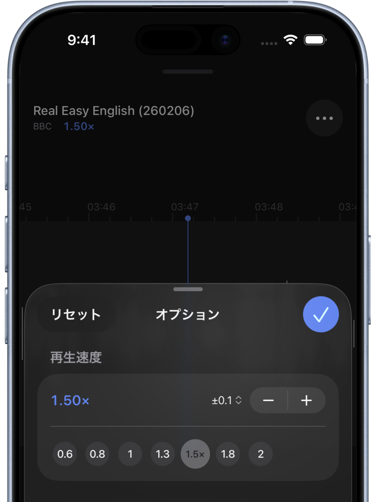
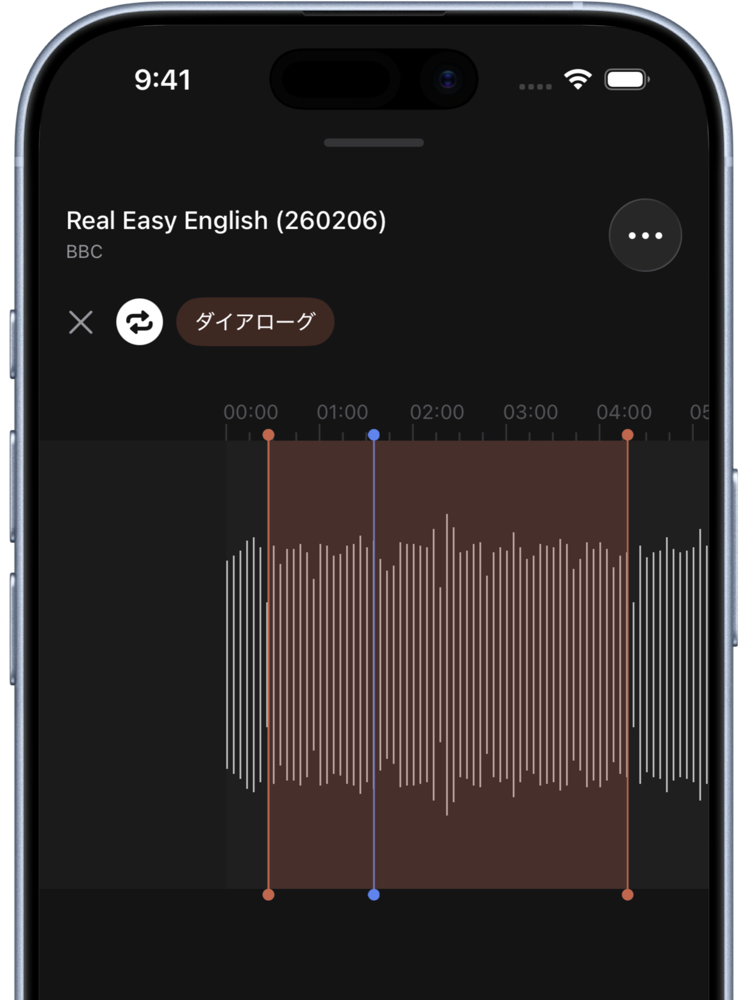

聴きたい場所へ、
すぐに。
Sailerは、波形表示機能を備えたiOS向けの音声プレーヤーです。画面をスクロールするだけで、再生位置を直感的に調整できます。語学学習や音楽練習、会議の文字起こしなどの用途に最適です。

Sailerは、波形表示機能を備えたiOS向けの音声プレーヤーです。画面をスクロールするだけで、再生位置を直感的に調整できます。語学学習や音楽練習、会議の文字起こしなどの用途に最適です。
ごちゃごちゃしたボタンはありません。それでも、豊富なジェスチャーでさまざまな操作ができます。
音声波形を左右にスクロールするだけで、再生位置を自由に動かせます。ピンチ操作で拡大すれば、さらに細かい調整も可能。

聴き返したい箇所にマーカーを打つだけ。ワンタップで瞬時に戻れます。タイトルや説明もつけられます。

0.25倍速から4倍速まで対応。0.01刻みの微調整も可能です。

マーカー間をダブルタップ（または2本指タップ）するだけで再生範囲を指定。ループ再生もできます。

指定した範囲の音声を文字起こしできます。語学学習や会議の議事録作成に大活躍です。
指定した範囲の音声を別ファイルとして書き出せます。複数の範囲を選択すれば、連結して書き出すことも。
デバイスに保存された音声ファイルをそのまま開けます。MP3、M4A、WAVなど幅広いフォーマットに対応。
音声ファイルごとにメモを残せます。聴きながら気づいたことをその場で記録できます。
波形を見ながら聴きたい箇所を繰り返し再生。スロー再生や文字起こしも活用して、リスニング力を鍛えられます。
練習したいフレーズを区間ループで繰り返し。ピンチで波形を拡大すれば、細かい音のタイミングまで。
振り付けが変わるタイミングにマーカーを設定して、パートごとに集中練習。
会議を聴きながらメモを残して、気になる箇所はマーカーで記録。作業効率が格段にアップします。
無料でダウンロード。